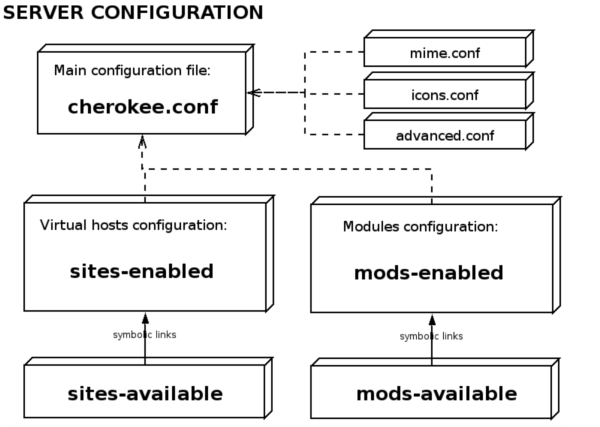

Cherokee Web Server: Configuration
Configuration
The configuration files of Cherokee are usually placed on /etc/cherokee, but it might change depending on the distribution or installation parameters. By default there are a few configuration files, each one with a a main target, but that is only the default configuration. Cherokee supports inclusion of configuration files, so you are free to write down a never ending configuration file with tens of virtual hosts inside it, or to split it up in separate files.

There are three different configuration file
- The main one is cherokee.conf. It is usually located in /etc/cherokee. This file deals with the server configuration.
- There is separate configuration file for the mime types: mime.conf
- Finally, there is another one for the icons configurations: icons.conf. This file let you associate the file extensions with the icons that will be shown on directory listing.
The most interesting file is cherokee.conf. It file support to include files and directories, so the default configuration in splitted in a few files to make the configuration easier:
- /etc/cherokee/cherokee.conf: Basic server configuration
- /etc/cherokee/advanced.conf: Advanced topics. Don't touch it unless you know what you are doing.
The virtual servers configuration is contained in two directories:
- /etc/cherokee/sites-available: The idea is to add a file per virtual server to contain its configuration, but it is just a suggestion. You reorganize it as you want, you might want to add more than one virtual server per file, and it is also ok. The key points about this directory are:
- It will read all the files inside it, so be carefull to keep it clean.
- It only holds the available hosts configurations. It doesn't mean these hosts are actived.
- /etc/cherokee/sites-enabled: To active a site from the sites-available directory you should create a link from sites-avaible to sites-enabled. In this way, if you want to desactivate a virtual host for maintainment reason, you will only need to remove a link.
There is also a container for extended functionalities:
- /etc/cherokee/mods-available: It works in the same way as sites-avaible, but containing funcionalities.
- /etc/cherokee/mods-enabled: It contains a link for each active module.
How to add a new virtual host
Let imagine you want to add a virtual server called example.com.
- The first task is to create of it. /etc/cherokee/sites-available/example.com seems to be a good name, but you could choose another one, there isn't problem at all.
- Then add the desired configuration into it. For example:
Server example.com, www.example.com {
DocumentRoot /var/www/example.com
Directory / {
Handler file
}
Extension php, php4 {
Handler phpcgi
}
}
- And finally, if you want to make at virtual server active, link it from the sites-enabled directory:
cd /etc/cherokee/sites-enabled
ln -s /etc/cherokee/sites-available/example.com .